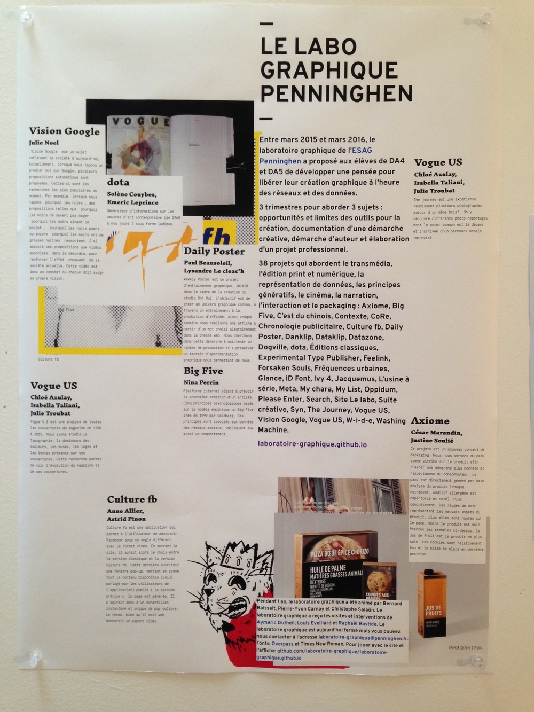

Un lieu subjectif...
Hello World! I’ll be back in a few days with a new site... Meanwhile
eMail me
! — pyc
Texts
La place du graphiste dans l'univers du code
Enseignement et numérique en école d’art graphique et d’architecture intérieure
Des machines au livre
You should visit
laboratoire-graphique.github.io
